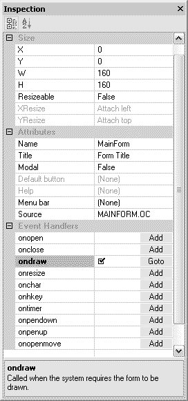

It seems every programming book's first program is always a "Hello World" example, so we will follow the tradition here. This example consists a minimal Palm program which simply displays a "Hello World" message on the screen.
This tutorial's goal is to get you comfortable with the tool and the development process.
|
|
|
Now the project is created, so let us briefly go through the things you see on the screen.
|
||
|
 | |
|
||
|
;
|
Select the Project menu and choose Build, or press the F7 key.
If everything goes smoothly, you should see following messages in the Output:; The actual build time depending on your desktop computer speed.
Compiling... Build duration [98.86] ms Build completed |
The resulting MyApp.prc file should now be located in your project directory.
Copy the MyApp.prc file to the emulator. There are two quick ways to do so.
Go to the Palm OS application launcher on the emulator. You should see an application named "Hello World" on the emulator. Click on the application and see what happens!
The last but not the least, after developing your first HelloWorld program, you might want to share it with other friends who has Palm OS devices. Just give the MyApp.prc file to your friends through email attachments or web downloads. Make sure give them the OrbFormsRT.prc as well!
OrbForms Designer also allows you to build a full standalone PRC file as well. Just change the project root node's property standalone from FALSE to TRUE, and build the project again.
If you create an application that you intend to give to others, you MUST get a unique creator id for each application. You can register a creator ID at the Palm development site - click on the OrbForms Designer's Help menu and select "Palm OS Creator ID" to go there.
1. Did you notice the HelloWorld program's title is "Form Title"? Can you give it a more appropriate name?
Hint: Click on the mainForm node in the Workspace Project, and take a look at the Inspection.
2. The message "Hello World" is rather meaningless. How about replace it with your favorite proverb or fortune cookie saying?
Hint: Be aware the screen width limitation. You might need to break the words into a few different lines.